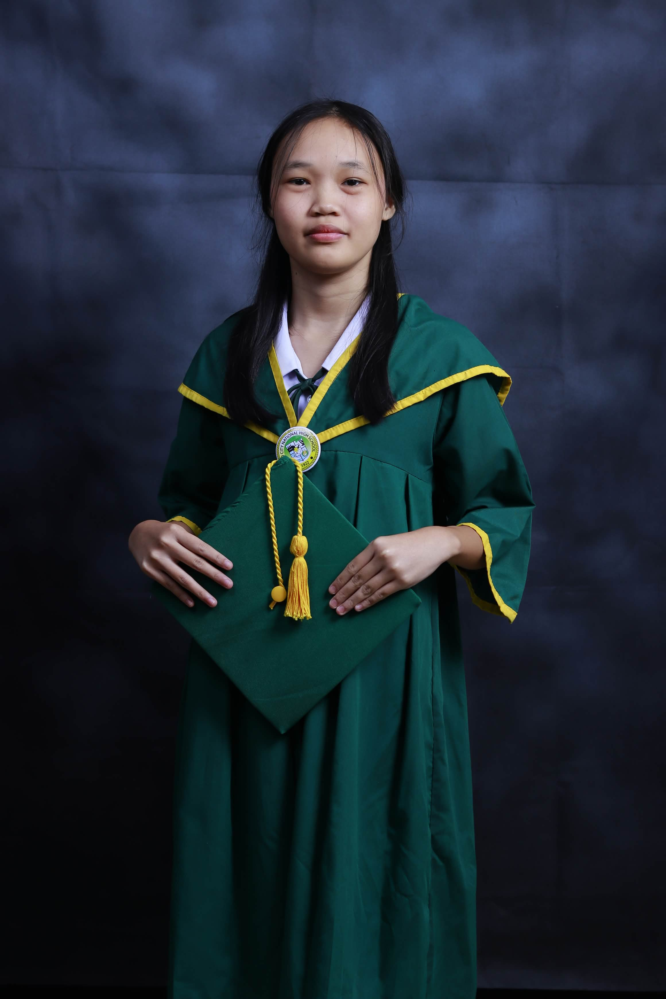

A creative explorer passionate about art, animation, and technology — always chasing the next curious thing.
Hello there! I'm Jianne Mae L. Ocapan,
a first-year
I'm someone who is curious, open-minded, and always eager to discover something new. I enjoy exploring different experiences, learning along the way, and finding new ways to express myself. Like everyone else, I'm still figuring things out, discovering my strengths, and growing through every opportunity that comes my way.
This e-portfolio serves as a little introduction to who I am, my experiences, and the things that make up my journey as a student. Thank you for stopping by, and welcome to my e-portfolio!
A demonstration of how HTML, CSS, and JavaScript work together to create interactive and visually appealing web pages. This e-portfolio is also part of my journey in learning web development and applying my skills.
A Java-based command-line Net Cafe Management System designed to manage computer sessions, customers, payments, and inventory. It features Admin, Manager, Staff, and Customer roles, with text files used for data storage.
Feel free to reach out — just send me an email!
jocapan_260000000724@uic.edu.ph